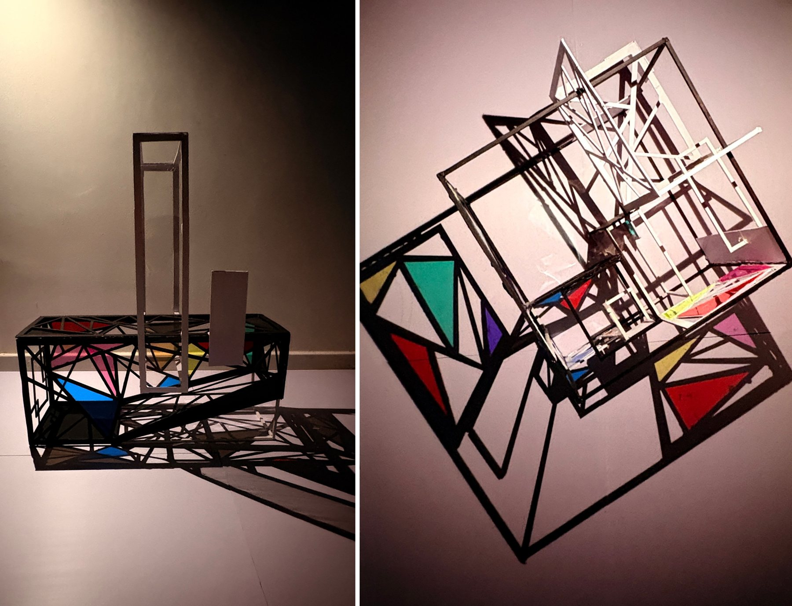
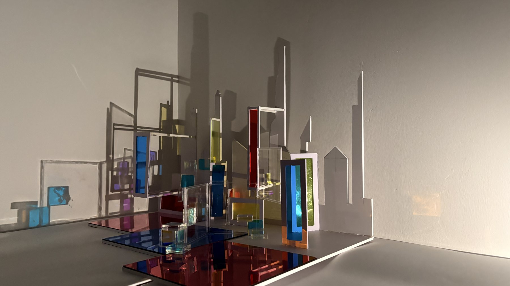
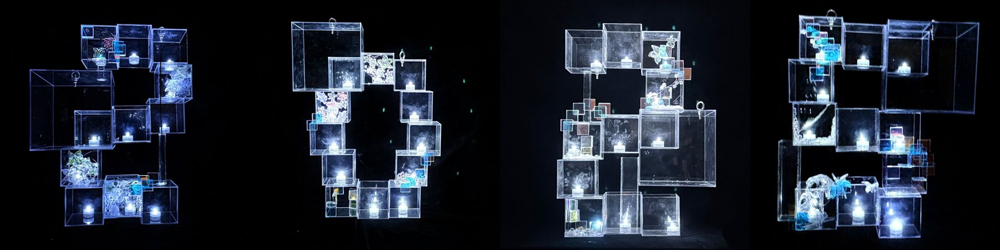
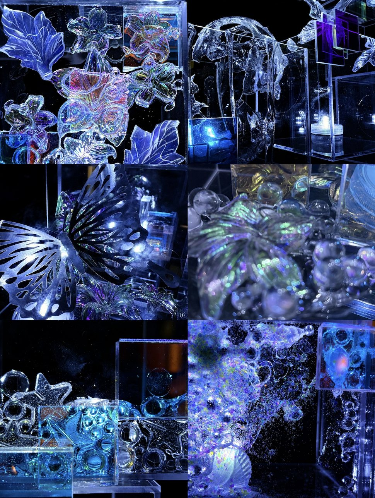
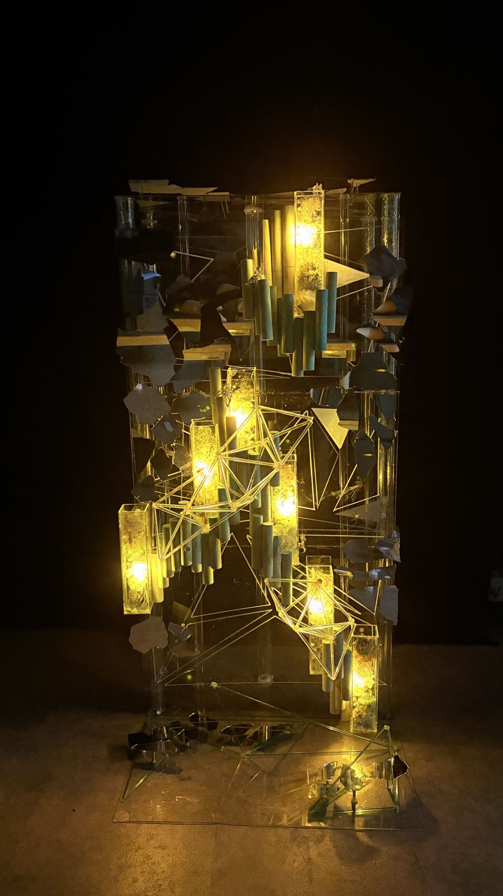
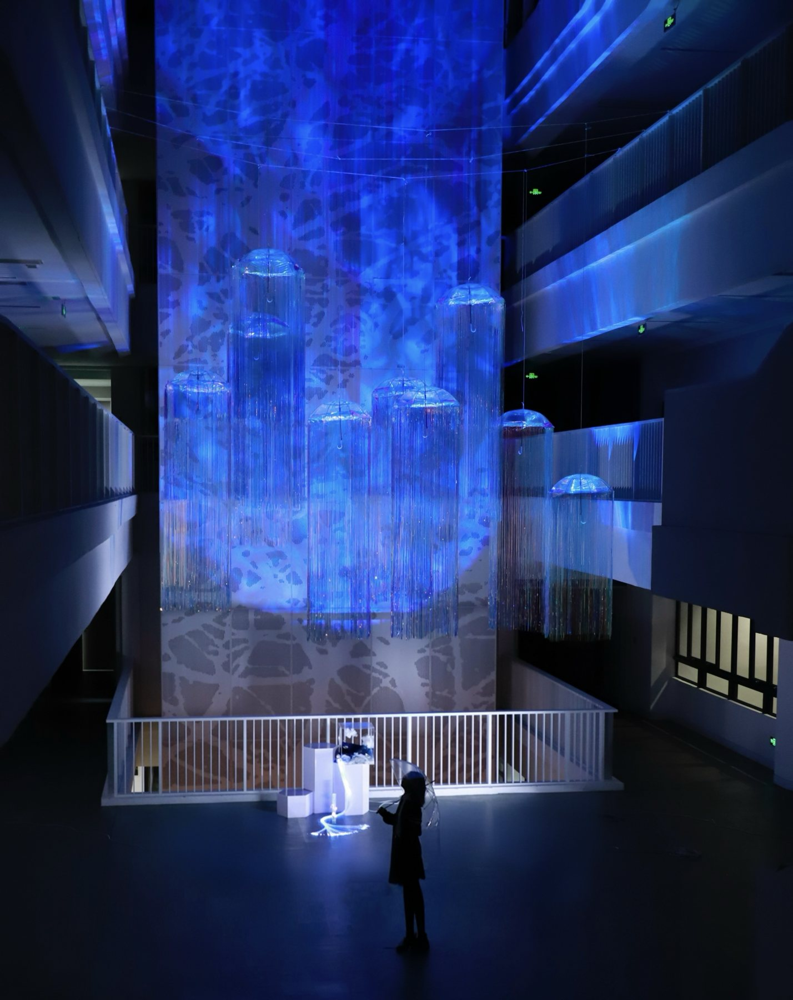

01 — FOUNDATIONS
Pure Mathematics
Patterns, structures, and elegant proofs. Browse papers and notes in this area.
Browse papers ↗RESEARCHER · CREATOR · CURIOUS HUMAN
I am a current freshman at Swarthmore College, class of 2030, potentially majoring in Applied Mathematics and Philosophy, Politics, and Economics (P.P.E.). Currently, I am working at the Swarthmore College Social Science Quantitative Lab as a student associate and researcher with Prof. Greg Amusu and Prof. Tao Gao. My current research focuses on quantitative politics, quantitative finance, and mathematics. Besides academic research, I am also a TI-Nspire Calculator game producer (3 games), kendo player (Level 8; highest level), artist, musician (vocal, piano, flute, violin), actor (International Thespian Society Silver member; EdTA National Semifianlist), KPL fan, and Yuanchuang lover.
 Your photo
Your photo01 / QUESTIONS I FOLLOW
I like crossing boundaries between fields to understand how the world works—and how it might work better.
01 — FOUNDATIONS
Patterns, structures, and elegant proofs. Browse papers and notes in this area.
Browse papers ↗02 — INTELLIGENCE
Learning systems, reasoning, and the human questions that come with intelligent machines.
Browse papers ↗03 — SOCIETY
Using data and rigorous methods to study people, institutions, and social change.
Browse papers ↗04 — GOVERNANCE
Power, policy, and political behavior. Browse writing and projects in this area.
Browse papers ↗Add a question, project, or idea you’re thinking about right now.
02 / EXPERIENCE & OPPORTUNITY
A snapshot of what I’ve learned, built, and where I hope to go next.
I bring an interdisciplinary perspective, a love of hard problems, and care for the people behind the data.
Add your degree, university, and graduation year.
Add roles, research positions, internships, or selected achievements.
Describe the roles, collaborations, or problems you’re excited about.
03 / MADE BY HAND, HEART & EYE
Selected three-dimensional works exploring architecture, memory, light, and imagined landscapes.

SELECTED WORK · 01
Reimagining the interior world of a snack box as a small architectural space. Geometric forms and openings turn a familiar object into a place to explore.
Materials PVC expansion sheet · transparent film

SELECTED WORK · 02
A study combining blurred city views, Hangzhou’s skyline, and the visual language of traditional Chinese painting. Colored plastics let light and shadow connect old and new architectural forms.
Materials Plastic · PVC expansion sheet · transparent film · mirror


SELECTED WORKS · 03
An interactive New Year installation about possibility, uncertainty, and shared wishes. Light-filled boxes invite viewers to imagine what may come next.
Materials Plastic · UV glue · laser-cut paper · light

SELECTED WORK · 04
An imagined landscape built from geometric symbols and shifting reflections. The interactive structures encourage viewers to recognize nature through light, sound, and other senses.
Materials Plastic · glass · flowers · wood · UV glue · glitter · light

SELECTED WORK · 05
An immersive installation that transforms a public interior with suspended forms and saturated blue light, creating a quiet encounter between architecture and the viewer.
04 / OUTSIDE THE FOOTNOTES
Writing, art, music, games, and the small side quests that make life feel expansive.
A universe
of little interests
HAVE A QUESTION OR AN IDEA?